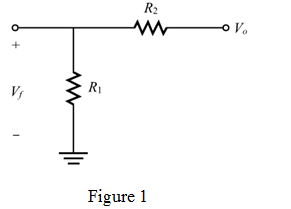
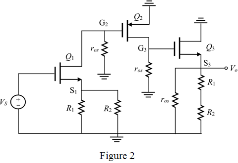
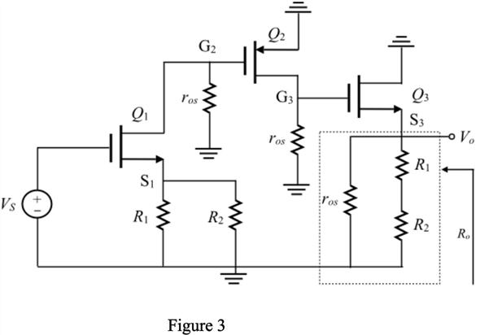

Step 1:
(a)
Refer to the circuit diagram of series-shunt amplifier in Figure P11.41 in the text book.
From the figure it is observed that:
1. MOS transistor  is connected in common source amplifier configuration.
is connected in common source amplifier configuration.
2. MOS transistor  is also connected in common source amplifier configuration.
is also connected in common source amplifier configuration.
3. MOS transistor  is connected in common drain amplifier configuration.
is connected in common drain amplifier configuration.
Basically, the common source amplifier has relatively high small signal voltage gain. That is,
It is clear that when the source voltage of the MOS transistor  increases, then the output voltage or drain terminal voltage of the transistor
increases, then the output voltage or drain terminal voltage of the transistor  increases. Drain terminal voltage of the transistor
increases. Drain terminal voltage of the transistor  is connected to the gate of the MOS transistor
is connected to the gate of the MOS transistor  . When the gate voltage of the transistor
. When the gate voltage of the transistor  is increased, the drain terminal voltage of the transistor is increased.
is increased, the drain terminal voltage of the transistor is increased.
Common drain or source follower circuit has low voltage gain at its output. An increase in the gate voltage of the MOS transistor  results an increase at the output voltage through the voltage dividing feedback circuit.
results an increase at the output voltage through the voltage dividing feedback circuit.
It is concluded that when input is high, then the output is also high. The gain is very high for negative feedback of the series shunt amplifier. Therefore, the gain of the series shunt amplifier is high.
Therefore, the feedback used in the circuit is .
Step 2:
(b)
The feedback amplifier gain is,
Here, the closed loop gain is very high, . Therefore,
Here,  is called the feedback factor.
is called the feedback factor.
Draw the beta circuit as shown in Figure 1.

Step 3:
Calculate the feedback factor,  .
.
Therefore, the closed loop voltage gain is,
Substitute for and for .
Therefore, closed loop voltage gain is  .
.
Step 4:
(c)
Suppose the source voltage has zero DC voltage. The general expression for overdrive voltage or effective voltage is,
Calculate the gate to source voltage.
It is clear that all MOS transistors are operated in enhancement mode since it obeys the condition.
Apply the Kirchhoff’s voltage law at the left side of transistor,  .
.
Calculate the voltage at the source terminal of the transistor  .
.
Therefore, the DC voltage at the node is .
Step 5:
Apply the Kirchhoff’s voltage law at the top of transistors to calculate the drain voltage of  .
.
Therefore, the DC voltage at the node is  .
.
Each current source has minimum DC voltage across it for proper operation. The following condition is applicable to all current sources to operate in the saturation region.
Here,
Step 6:
Apply Kirchhoff’s current law at the source node of  .
.
Substitute for ,  for , for
for , for  and for .
and for .
Therefore, the DC voltage at the node is .
Step 7:
Calculate the drain to source voltage.
Substitute for and  for .
for .
Apply the Kirchhoff’s voltage law to the transistor  .
.
Calculate the DC voltage at the gate terminal of the transistor  .
.
Therefore, the DC voltage at the node is .
Step 8:
(d)
The open loop amplifier is also known as A circuit. Ground the and each current source has the output resistance equal to . So, replace the current sources with its output resistances. Split the feedback resistor  .
.
Draw the  circuit for the feedback amplifier.
circuit for the feedback amplifier.

Step 9:
Calculation of gain of MOS transistor
 in the first stage:
in the first stage: In Figure 2, the output is taken from the drain terminal of the transistor and the input of the transistor is . Therefore, the voltage gain of the transistor  is,
is,
But the common source amplifier with source resistor has effective transconductance and output resistance.
Calculate the value of trans-conductance.
Calculate the value of  .
.
Calculate the resistance 
Step 10:
Calculate the voltage gain of the transistor  .
.
Substitute for , for , and for .
Therefore, the gain of first stage is .
Step 11:
Calculation of gain of MOS transistor  in the second stage:
in the second stage:
In Figure 2, the output is taken from the drain terminal of the transistor  and the input of the transistor
and the input of the transistor  is . Therefore, the voltage gain of the transistor
is . Therefore, the voltage gain of the transistor  is,
is,
Calculate the voltage gain of the transistor .
Therefore, the gain of second stage is .
Step 12:
Calculation of gain of MOS transistor  in the third stage:
in the third stage:
In Figure 2, the output is taken from the source terminal of the transistor  and the input of the transistor
and the input of the transistor  is . Therefore, the voltage gain of the transistor
is . Therefore, the voltage gain of the transistor  is,
is,
Here,
Step 13:
Calculate the load resistor.
Calculate the voltage gain of the transistor .
Therefore, the gain of third stage is .
Step 14:
Calculate the overall voltage gain.
Therefore, the overall voltage gain is .
Step 15:
(e)
The Figure 1 in part (a) is called the feedback network (voltage dividing feedback network).
Recall the expression for feedback factor,  from part (b).
from part (b).
Substitute for and for .
Therefore, the value of  is .
is .
Step 16:
(f)
The expression for voltage gain is,
Substitute for and for .
This voltage gain is approximately equal to value that is calculated in part (b).
Therefore, the value of voltage gain is .
Step 17:
(g)
The circuit for finding output impedance is shown in Figure 3.

Step 18:
Calculate the output resistance .
Calculate the value of trans-conductance.
Calculate the value of  .
.
Step 19:
Calculate the output resistance.
Simplify further.
Therefore, the output resistance is .